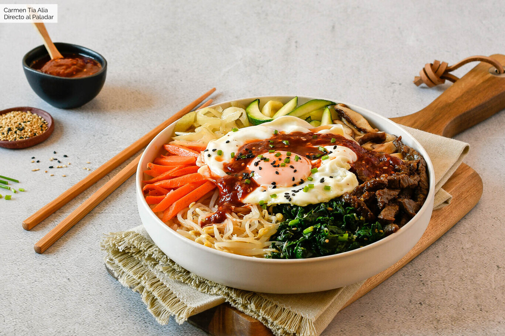

Platillos típicos
| Platillo | Descripción |
|---|---|
| Bibimbap | Arroz mezclado con vegetales, carne, huevo y gochujang. |
| Kimchi | Repollo fermentado con chile, ajo y especias. |
| Bulgogi | Carne marinada en salsa de soya, ajo y azúcar. |
| Tteokbokki | Pasteles de arroz en salsa picante dulce. |
Ingredientes característicos
| Ingrediente | Uso principal |
|---|---|
| Gochujang | Pasta picante para sopas, guisos y marinados. |
| Salsa de soya | Base para marinados y platillos salados. |
| Ajo | Presente en la mayoría de recetas coreanas. |
| Ajonjolí | Da sabor y textura a muchos platillos. |
Postres populares
| Postre | Descripción |
|---|---|
| Bungeoppang | Pan en forma de pez relleno de frijol rojo dulce. |
| Hotteok | Panqueques rellenos de azúcar morena y nueces. |
| Patbingsu | Hielo raspado con frutas y frijol dulce. |